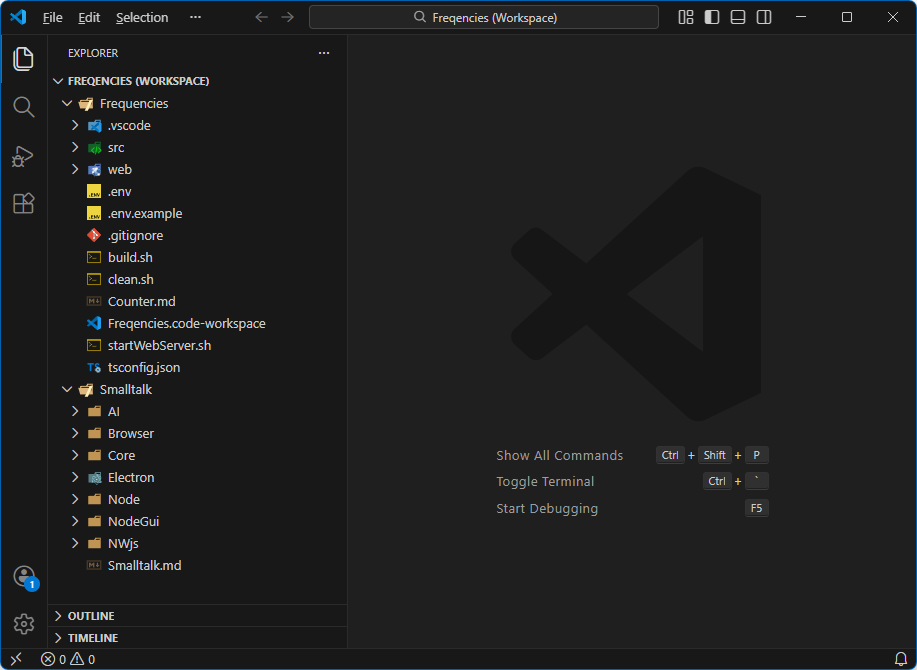
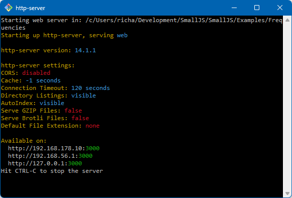
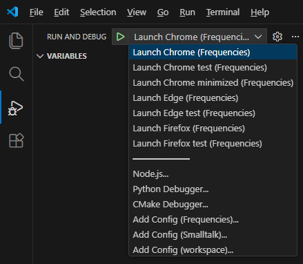
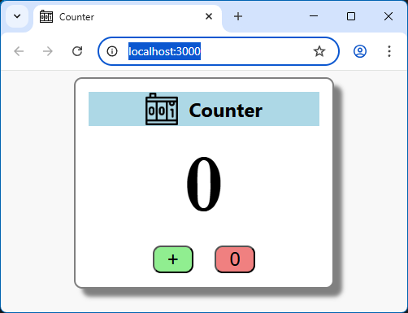
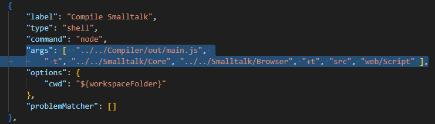

Copy template app
To get started quickly, we'll just copy an existing example browser app as our template.Our app will count letter frequencies, so we'll call it: Frequencies.
Start by copying the folder
./Examples/Counter to the new folder ./Examples/Frequencies .In the new folder, rename the file
Counter.code-workspace to Frequencies.code-workspace .Open the new workspace file in VSCode, e.g.: by double-clicking on it in your file manager.
The result should look like this:

Start web server
We're making a web app so we'll need a webserver.To start the npm webserver 'http-server' on port 3000,
run the bash script:
startWebServer.sh from the new folder Freqencies .The result should look like this:

Select browser
To start the app first select a browser you have installedfrom the VSCode menu "Run and Debug" in the launch dropdown:

Run app
Now click the green start triangle or press the [F5] key to start the app.The result should look like this:
(Remember, this is still just a copy of the Counter app)

Check compilation
Switching back to VSCode, the terminal pane should like like this:
All Smalltalk library files and app files were first compiled to JS modules in the folder
./web/ScriptNote:
The compilation step is a VSCode task in the file:
./vscode/tasks.json .In the task
"Compile Smalltalk" you can see that the paths to the SmallJS compiler and library are relative.

Because our new app has in the same relative folder position, this can stay the same.
If you move your app to a different folder level, these paths must be updated.